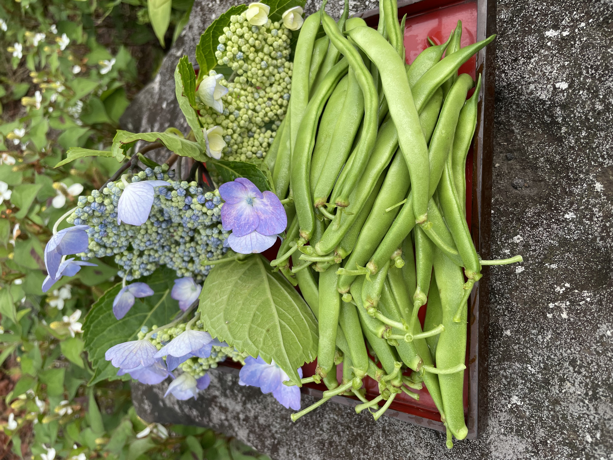

販売終了しました
申し訳ありませんが、現在キヌサヤエンドウの販売は終了しました。
他のおいしい野菜や商品をご覧いただけますので、ぜひご検討ください。
インゲン豆
インゲン豆は、さわやかな味わいが特徴の野菜です。当店のインゲン豆は新鮮で食べ応えのある豆が特徴です。サラダや炒め物、スープなど、さまざまな料理に活用できる野菜です。
特性
- さわやかな味わい
- 食べ応えのある豆
- 栄養素を豊富に含む
野菜の苗植え・収穫時期
インゲン豆の苗植えは春から夏にかけて行われます。収穫時期は苗植えから約2か月後の夏から秋にかけてです。気候や品種によっても収穫時期は異なる場合がありますので、詳細な時期は専門の農業資料などをご参考にしてください。
イソゲンの写真

採れた日付: 2023年6月28日